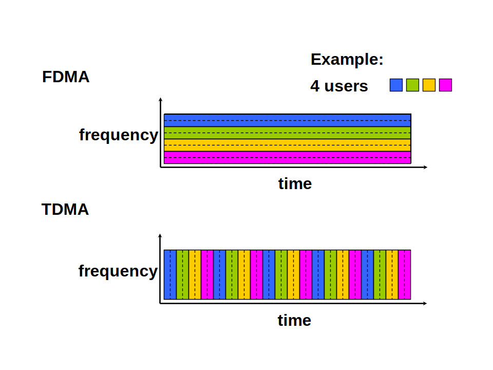
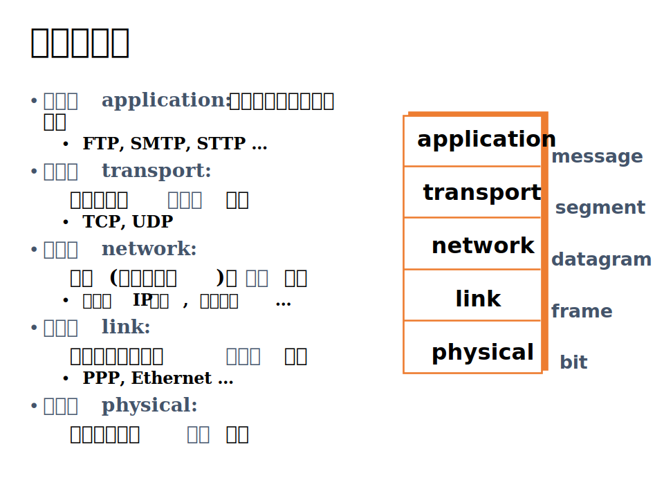
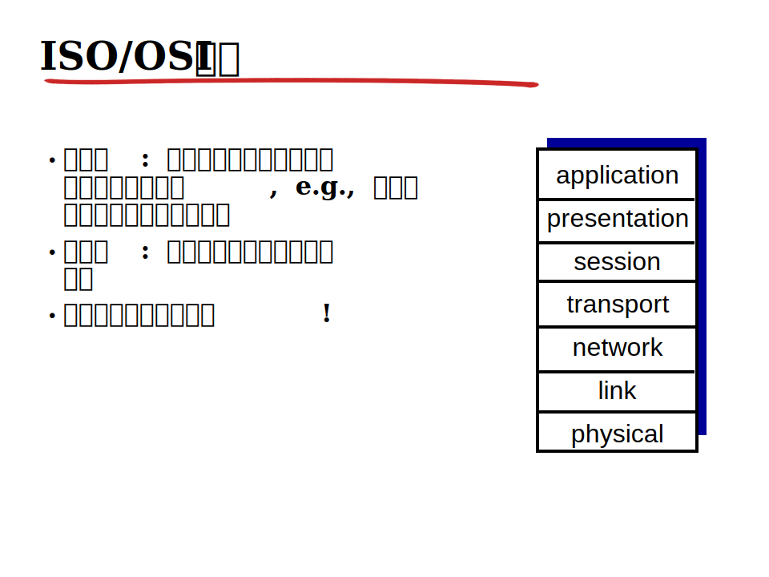
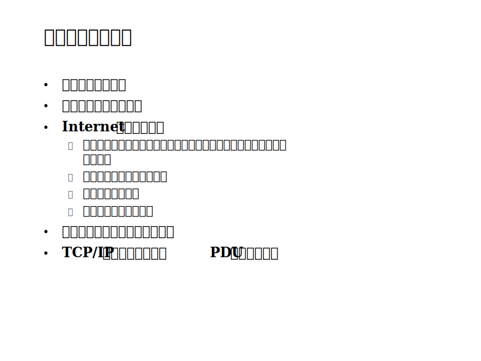

Computer Network Chapter 1
本文最后更新于：June 2, 2022 pm
Chapter 1: Computer Network and the Internet
Concept(概念)
首先需要介绍本章会用到的一些概念:
- 计算机网络: 两台以上具有独立操作系统的计算机通过某些介质连接成的相互共享软硬件资源的集合体。这很教科书，但也很精炼。
- Internet: 这个概念很泛化，无法给出一个具体的定义，但我们可以通过其特征来描述。
- 从组成结构来看，Internet可以分为网络核心和网络边缘两部分，网络边缘主要是各种主机host和端系统end-system等设备，网络核心则是大量的路由器、交换机以及通信链路。
- 从具体构成来看，Internet是由网络构成的网络，一个个主机连接在一起形成局域网，而所有的局域网连接起来组成一个大的网络，这便是Internet。
- 协议:
- 定义了两个或多个通信实体间所交换报文的格式和次序，以及在报文发送和/或接收或者其他事件方面所采取的行动（响应）。
- 协议的基本要素: 语法、语义和同步。
The Network Edge(网络边缘)
网络边缘部分由主机/端系统组成，主机/端系统在服务角色方面分别有客户和服务器两种身份可以选择。
Access Network(接入网络)
接入网络的分类:
- 住宅接入网络: 拨号线路上使用modem调制解调，理论最高值为56Kbps,不能同时网上冲浪和拨打电话。(电话拨号上网)
- 机构接入网络: 即局域网，在局域网下有自己的网络结构，但作为整个网络接入Internet。传输速率一般为10Mbps、100Mbps、1Gbps、10Gbps。
- 无线接入网络: 通过AP(access point)和STA(station)来实现无线网络的接入。
- 无线局域网(wireless LANs): 通过无线信道来传输数据，典型为WiFi。
- 广域无线接入网: 由ISP(Internet Service Provider)提供的无线接入网，典型为3G、4G。
Physical Media(物理介质)
物理介质的分类:
- 双绞线(网线): 两根彼此绝缘、相互缠绕成螺旋状的铜线。缠绕的目的是减少电磁干扰，提高传输质量。
- 同轴电缆(铜线): 两根彼此绝缘的同心导体，双向传输。
- 光纤线缆: 光纤传导光脉冲, 每个光脉冲代表1位，高速传输:高速点对点传输 (可达数十或数百 Gbps)误码率，中继到更远传输距离;，防止电磁干扰，难以被分光窃听。
- 无线电磁波: 以电磁频谱承载信号，没有物理连线，双向。
- 地面微波: 45 Mbps 信道。
- 局域无线通道: WiFi 11Mbps, 54Mbps。
- 广域无线通道: GPRS,CDMA，3G: hundreds of kbps。
- 卫星通信: 高达数百Mbps信道。
The Network Core(网络核心)
Packet Switching(分组交换)
每个端到端的数据流被划分成分组，每个分组通过网络来离散地发送。
优点:
- 所有分组共享网络资源
- 每个分组使用全部链路带宽
- 资源按需使用
Circuit Switching(电路交换)
每次会话预留沿其路径（线路）所需的独占资源－－电话网，实现方式: 将网络资源(带宽)分片。每个分片分配到会话，分片没有被会话使用的情况下，分片空载。但电路交换提供电路级性能保障，传输准确性高。建立一个专门的端到端线路即每个链路上预留一个线路。
- frequency division(频分)
- time division(时分)

电路交换与分组交换的比较
| 电路交换 | 分组交换 | |
|---|---|---|
| 是否需要预留线路 | 是 | 否 |
| 是否需要创建链路 | 是 | 否 |
| 是否需要分片 | 是 | 否 |
| 是否可以共享资源 | 否 | 是 |
| 是否提供可靠数据传输 | 是 | 否 |
| 是否提供带宽保障 | 是 | 否 |
Delay, Loss and Troughput in Packet-Switched Networks(分组交换网络中的延迟和丢失)
Delay(时延)
分组延迟:
- nodal processing delay(节点处理延时): 节点处理到达数据的时间。量级: 微秒级。
- 检查错误位
- 选择输出链路
- queueing delay(排队时延): 分组处理完成后等待到输出链路上的时间。量级: 取决于当前的拥塞程度。
- transmission delay(传输延时): 分组在从输出链路上开始输出到输出结束的时间。量级: 取决于分组长度和当前节点传输速率。
- propagation delay(传播时延): 分组在物理介质上传播的时间。量级: 物理介质的类型和物理链路的长度。
Detail of Queueing Delay
Asuming: R=链路传输速率 (bps)，L=分组长度 (bits)，a=平均分组到达率，
Then: traffic intensity(流量强度) =
当时，分组稀疏到达,无队列,平均排队延迟极小接近于0
当时，分组猝发到达,形成队列,队列长度迅速增加,排队延迟大幅增大
当时，输出队列平均位到达速率超过送走这些位的极限速率，输出队列持续增长，排队延迟趋于无穷大。
Loss(丢包)
当Queueing Delay很大时即traffic intensity大于或趋向于1时，路由器或交换机会选择丢弃一些到达的分组，这时候分组就会丢失，称为丢包。
Throughput(吞吐量)
定义: 在发送方和接收方之间单位时间内成功地传送数据的数量。因此可以分为平均吞吐量和瞬间吞吐量。
每个端到端的连接吞吐量取决于连接上所有链路中吞吐量最小的链路吞吐量，该链路称为瓶颈链路。瓶颈链路一般出现在网络核心到网络边缘的链路上。
Protocol Layers and Their Service Models(网络协议层和其服务模型)
Protocol Layers(网络协议层)

每层的主要任务:
- 应用层: 应用层负责传输端系统中应用程序的数据报文信息，并且是网络应用程序及它们的应用层协议存留的地方。典型协议: HTTP;FTP;SMTP;
- 传输层: 传输层负责传输数据段，在应用程序端点之间传输数据段。典型协议: TCP;UDP;
- 网络层: 网络层负责将数据报从一台主机移动到另一条主机。典型协议: IP;OSPF;BGP;
- 链路层: 链路层负责将数据帧从一个网络节点移动到另一个网络节点。典型协议: PPPoE;Ethernet;
- 物理层: 物理层负责将比特从一个网络元素移动到邻近的网络元素。

七层模型相较于五层模型增加了表示层和会话层，其他层次结构相同。
- presentation: 使通信的应用程序能够解释交换数据的含义。
- session: 提供数据交换定界和同步功能。
Review

本博客所有文章除特别声明外，均采用 CC BY-SA 4.0 协议 ，转载请注明出处！